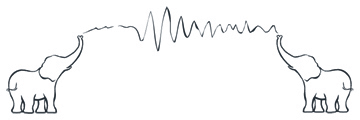
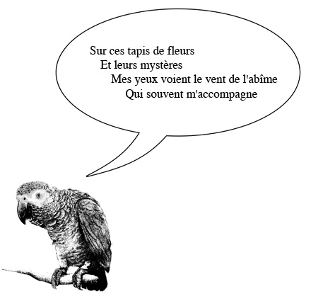
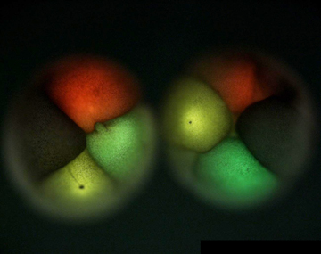
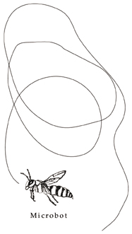
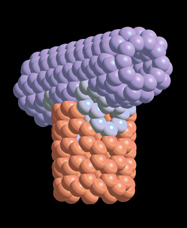
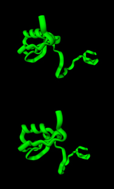
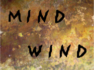

|
BIOPOETRY
Eduardo Kac
Since the 1980s poetry has effectively moved away from the printed
page. From the early days of the minitel to the personal computer as a
writing and reading environment, we have witnessed the development of
new poetic languages. Video, holography, programming and the web have
further expanded the possibilities and the reach of this new poetry.
Now, in a world of clones, chimeras, and transgenic creatures, it is
time to consider new directions for poetry in vivo. Below I propose the
use of biotechnology and living organisms in poetry as a new realm of
verbal, paraverbal and nonverbal creation.
1) Microbot performance: Write and perform with a microrobot in the
language of the bees, for a bee audience, in a semi-functional,
semi-fictional dance.
2) Atomic writing: position atoms precisely and create molecules to
spell words. Give these molecular words expression in plants and let
them grow new words through mutation. Observe and smell the molecular
grammatology of the resulting flowers.
3) Marine mammal dialogical interaction: compose sound text by
manipulating recorded parameters of pitch and frequency of dolphin
communication, for a dolphin audience. Observe how a whale audience
responds and vice-versa.
4)
Transgenic poetry: synthesize DNA according to invented codes to write
words and sentences using combinations of nucleotides. Incorporate
these DNA words and sentences into the genome of living organisms,
which then pass them on to their offspring, combining with words of
other organisms. Through mutation, natural loss and exchange of DNA
material new words and sentences will emerge. Read the transpoem back
via DNA sequencing.
5 ) Telephant Infrasonics: Elephants can sustain powerful infrasound
conversations at distances as far as eight miles. These can be
perceived by attuned humans as air pressure variations. Create
infrasound compositions that function as long-distance elephant calls
and transmit them from afar to a population of forest elephants.

6) Amoebal scripting: Hand write in a medium such as agar using amoebal
colonies as the inscription substance and observe their growth,
movement, and interaction until the text changes or disappears. Observe
amoebal scripting at the microscopic and the macroscopic scales
simultaneously.
7) Luciferase signaling: create bard fireflies by manipulating the
genes that code for bioluminescence, enabling them to use their light
for whimsical (creative) displays, in addition to the standard natural
uses (e.g., scaring off predators and attracting mates or smaller
creatures to devour).
8) Dynamic biochromatic composition: use the chromatic language of the
squid to create fantastic colorful displays that communicate ideas
drawn from the squid Umwelt but suggesting other possible experiences.
9)
Avian literature: teach an African Gray parrot not simply to read and
speak, and manipulate concepts and symbols, but to compose and perform
literary pieces.

10) Bacterial poetics: two identical colonies of bacteria share a petri
dish. One colony has encoded in a plasmid a poem X, while the other has
a poem Y. As they compete for the same resources, or share genetic
material, perhaps one colony will outlive the other, perhaps new
bacteria will emerge through horizontal poetic gene transfer.
11) Xenographics: Transplant a living text from one organism to
another, and vice-versa, so as to create an in vivo tattoo.
12) Tissuetext: Culture tissue in the shape of word-structures. Grow
the tissue slowly until the word-structures form an overall film and
erase themselves.
13) Proteopoetics: create a code that converts words into aminoacids
and produce with it a three-dimensional proteinpoem, thus completely
bypassing the need to use a gene to encode the protein. Write the
protein directly. Synthesize the proteinpoem. Model it in digital and
non-digital media. Express it in living organisms.
14) Agroverbalia: Use an electron beam to write different words on the
surface of seeds. Grow the plants and observe what words yield robust
plants. Plant seeds in different meaningful arrays. Explore
hybridization of meanings.
15)
Nanopoetry: Assign meaning to quantum dots and nanospheres of different
colors. Express them in living cells. Observe with a multiphoton
microscope or similar instrument what dots and spheres move in what
direction, and read the quantum and nanowords as they move through the
internal three-dimensional structure of the cell. Reading is
observation of vectorial trajectories within the cell. Meaning
continuously changes, as certain quantum and nanowords are in the
proximity of others, or move close or far away from others. The entire
cell is the writing substrate, as a field of potential meaning.

16) Molecular semantics: Create molecular words by assigning phonetic
meaning to individual atoms. With dip-pen nanolithography deliver
molecules to an atomically-flat gold surface to write a new text. The
text is made of molecules which are themselves words.
17) Asyntactical carbogram: Create suggestive verbal nanoarchitectures only a few billionths of a meter in diameter.
18) Metabolic metaphors: Control the metabolism of some microorganisms
within a large population in thick media so that ephemeral words can be
produced by their reaction to specific environmental conditions, such
as exposure to light. Allow these living words to dissipate themselves
naturally. The temporal duration of this process of dissipation should
be controlled so as to be an intrinsic element of the meaning of the
poem.
19) Haptic listening: Implant a self-powered microchip that emits a
sound poem upon contact (via pressure). The sound is not amplified
enough to be heard through the skin. The listener must make physical
contact with the poet in order for the sound to travel from the
microchip inside the poet's body into the listener's body. The listener
becomes the medium through which the sound is transmitted. The poem
enters the listener's body not through the ears, but from inside,
through the body itself
20) Scriptogenesis: Create an entirely new living organism, which has
never existed before, by first assembling atoms into molecules through
"Atomic writing" or "Molecular semantics". Then, organize these
molecules into a minimal but functional chromosome. Either synthesize a
nucleus to contain this chromosome or introduce it into an existent
nucleus. Do the same for the entire cell. Reading occurs through
observation of the cytopoetological transformations of the scriptogenic
chromosome throughout the processes of growth and reproduction of the
unicellular organism.
|
|
|  |
The
"robeet" (robotic bee) would allow a poet to write a performative
dance-text that has no reference in the physical world (that is, does
not send bees in search of food). Instead, the new
choreo-graphy (kinotation) would be (bee) its own reference. |
|
|  |
|
| The
beginning of a new alphabet. Letters can be created with carbon
nanotubes, tiny cylinders only a few billionths of a meter in diameter,
as exemplified by this letter "T". Words created at this nanoscale can
be made stable under the laws of quantum molecular dynamics. The first
letter of the word "Tomorrow". |
|
|  |
|
| By
assigning specific semantic values to aminoacids, a poet can write a
protein. The "Genesis" protein, above, critically encodes the biblical
statement: "Let man have dominion over the fish of the sea, and over
the fowl of the air, and over every living thing that moves upon the
earth." |
|
|  |
|
| Start
by collecting mud from the bottom of a lake or river. Create a flat
sealed box and introduce the mud, supplemented with water from the lake
or river, cellulose (use the most interesting pages of a newspaper),
sodium sulphate and calcium carbonate. Seal the box. Approximately
5,000 different microorganisms (prokaryotic bacteria and archaea) will
make up this population. Make a mask with the text to be read. Expose
to light everything but the text. In about 2 weeks the text will be
dark enough to be clearly read. Expose the whole surface to
environmental light and allow the words to dissipate. The population
within the sealed chamber will recycle nutrients and will support
itself with no additional aid. |
|